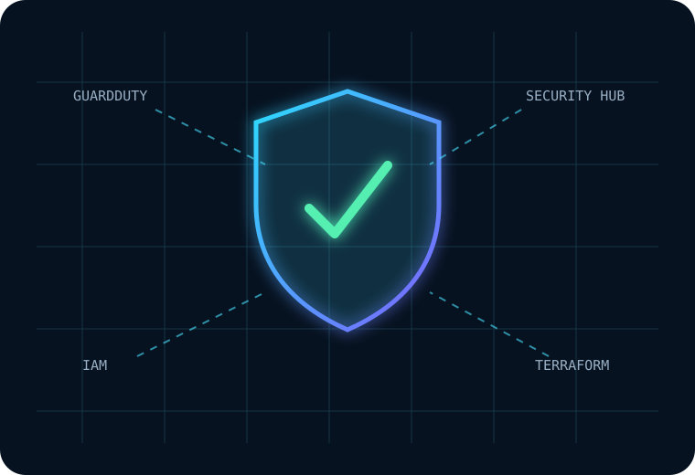
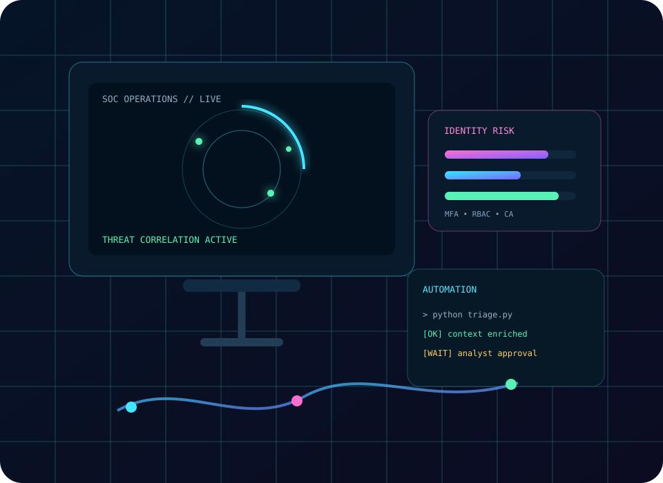
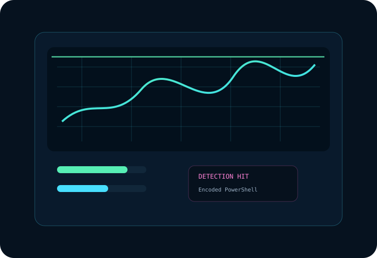

FLAGSHIP CLOUD SECURITY
AegisCloud
Event-driven AWS security platform with finding normalization, contextual risk scoring, response planning, evidence integrity and Terraform security controls.
I work across enterprise security operations, endpoint detection, cloud security, vulnerability management, identity protection, incident response, application deployment engineering and security automation.

 Splunk
Splunk ELK
ELK Sentinel
Sentinel AWS
AWS Python
Python PowerShell
PowerShell Terraform
Terraform IntuneSplunkELKSentinelAWS
IntuneSplunkELKSentinelAWSEach role opens into the actual technologies, day-to-day workflows and security responsibilities associated with that experience.

Every card is interactive. Hover to see the visual response, then click to open where I used the tool, what I did with it and the workflow around it.
Public projects are separated from employer production systems and use synthetic data where appropriate.

Event-driven AWS security platform with finding normalization, contextual risk scoring, response planning, evidence integrity and Terraform security controls.
ATT&CK-aligned detections with Microsoft Sentinel KQL, Sigma rules, threat hunts, synthetic telemetry and incident-response playbooks.
My AI-security focus is on reducing repetitive analyst work while keeping critical decisions explainable and human-reviewed.
Alerts, logs, identity and cloud evidence.
Summarization, enrichment and documentation.
Grounding, output checks and policy boundaries.
Analyst owns containment and high-impact action.
Review my projects, explore my technical work, or connect directly.